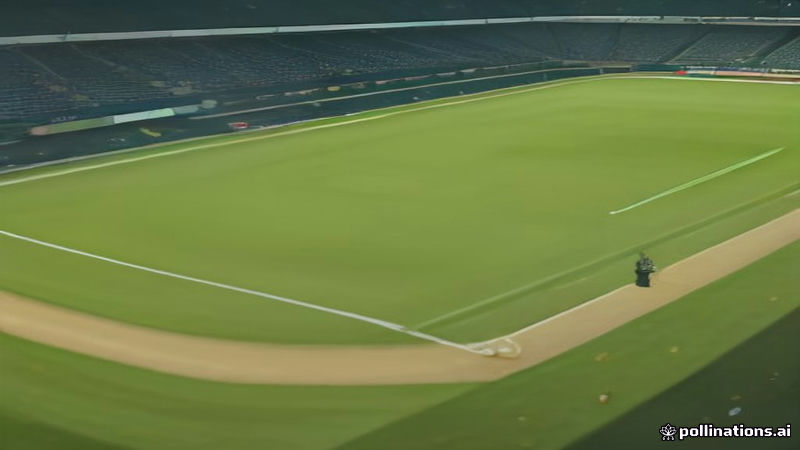

৫ নভেম্বর ২০২৬-এ বাংলাদেশ‑ওয়েস্ট ইন্ডিজ দ্বিতীয় টেস্ট ও সাফ ফুটবল চ্যাম্পিয়নশিপ শুরু
Prothom Alo · 2026-11-05
AI-generated illustration৫ নভেম্বর, ২০২৬-এ বাংলাদেশ দ্বিতীয় টেস্টে ওয়েস্ট ইন্ডিজের মুখোমুখি হবে এবং সাফ ফুটবল চ্যাম্পিয়নশিপের দ্বিতীয় ম্যাচে ভুটানের বিরুদ্ধে খেলবে।
৫ নভেম্বর ২০২৬-এ বাংলাদেশ‑ওয়েস্ট ইন্ডিজ ক্রিকেট সিরিজের দ্বিতীয় টেস্ট শুরু হয়, যা দুই দেশের দ্বিপাক্ষিক প্রতিযোগিতা চালিয়ে যায়।
একই দিনে সাফ ফুটবল চ্যাম্পিয়নশিপের উদ্বোধন হয়, যেখানে বাংলাদেশের দ্বিতীয় ম্যাচে ভুটানের বিরুদ্ধে খেলা নির্ধারিত।
Facts reported by: Prothom Alo
Read the original reporting at the links above.
Written by AI from facts reported by the outlets named above. It may contain errors; check the original reporting.Read the original reporting at the links above.
English version
Bangladesh-West Indies second test and SAFF football championship kick off on Nov 5
On 5 November 2026 the second test of the Bangladesh‑West Indies cricket series begins, continuing the bilateral contest between the two nations.
The same day marks the opening of the SAFF football championship, with Bangladesh’s second tournament match scheduled against Bhutan.